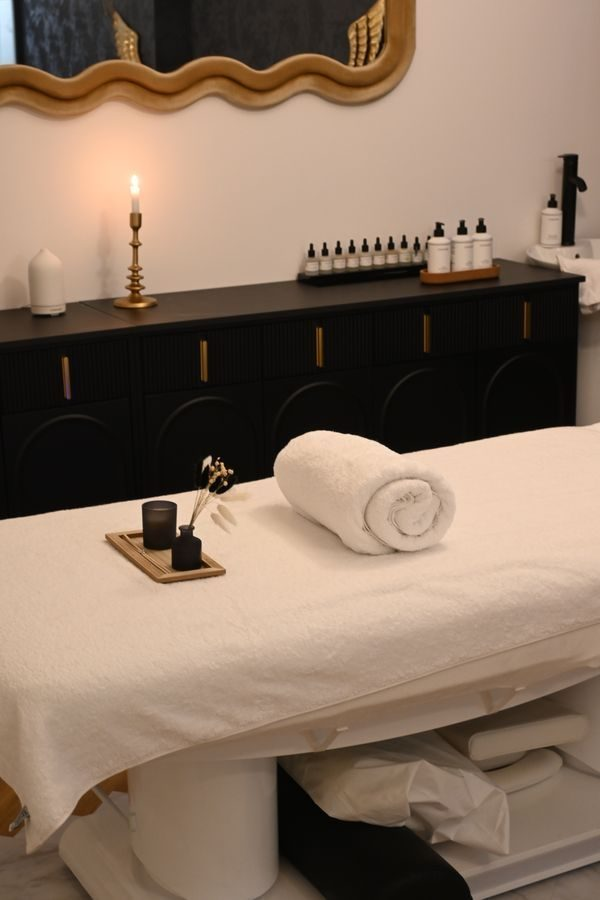

A Kneaded Touch Therapy LLC
Therapeutic massage in Fort Wayne, including traveling care that comes to you.
Stock photo: A therapist massaging a client lying face down on a table in a bright room with candles nearby. This is not a photo of A Kneaded Touch Therapy LLC.
About
A Kneaded Touch Therapy LLC provides therapeutic massage in Fort Wayne, with a focus on therapeutic care and traveling sessions. Traveling services bring the table to the client, and table and chair massage events are available for groups.
Massage services
Therapeutic senior massage
Therapeutic massage for seniors, listed on the booking page.
Traveling therapeutic relaxation
Relaxation massage at your location, in 60 or 90 minute sessions.
Traveling deep tissue
Deep tissue massage at your location.
Traveling pregnancy massage
Pregnancy massage at your location.
Traveling Swedish massage
Swedish massage at your location.
Companion care
Companion care, offered as a traveling service only.
Table and chair massage events
Table and chair massage for events.
Massage that travels to you
A Kneaded Touch Therapy LLC offers traveling therapeutic care in Fort Wayne. Call (260) 249-5899 to ask about a session or an event booking.
Gallery


All gallery photos are stock photos, labeled as such. They show the kind of work and setting described on this page, not this business.
Visit
Address: 2430 Lake Ave, Fort Wayne, IN
Hours: Monday 10:00 AM to 8:00 PM, Tuesday to Thursday 10:00 AM to 6:00 PM, Friday 10:00 AM to 8:00 PM.
Phone: (260) 249-5899
Contact
A Kneaded Touch Therapy LLC serves Fort Wayne, IN. Questions? Call (260) 249-5899.